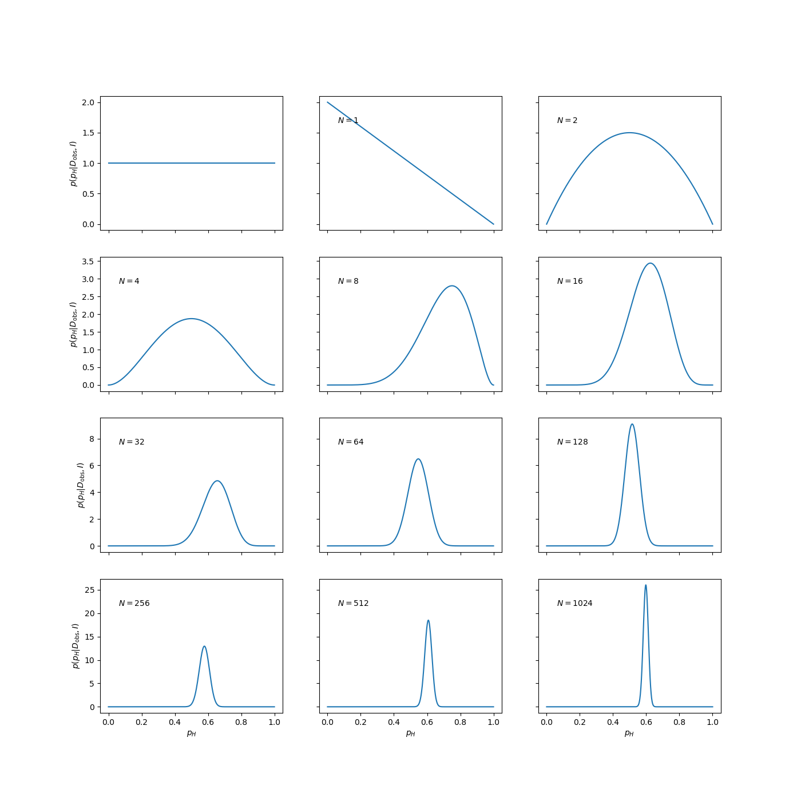

4.5. Review of Bayes’ theorem#
“Prediction is very difficult, especially about the future.”
—Niels Bohr
Here we continue the discussion of Bayes’ theorem, which is the starting point for all Bayesian methods. We will elaborate on how it encapsulates the process of learning from data, and show how it results from foundational axioms of probability theory. Finally, we introduce an application of Bayes’ theorem: the classical example of a coin tossing experiment (which you will revisit interactively in Demo: Widgetized coin tossing).
Axioms of probability theory#
Andrey Kolmogorov’s axioms of probability form the standard theoretical framework in which the probability (measure) \(\mathbb{P}\) is introduced. You can read more about those axioms in the definition of The probability measure. The most important aspect of his formalization of probability is not the axioms themselves but rather that he showed that probabilities can be incorporated into mathematics using the existing theory of measures. In fact, since then other axiomatic constructs of probability have been constructed, e.g., where the conditional probability is taken as the primitive notion. In this book we rely on Kolmogorov’s axioms from which the following two useful rules for how to manipulate probabilities and uncertainties can be derived
Property 4.1 (Product rule)
The left-hand side should be interpreted as the probability for propositions \(A\) AND \(B\) being true given that \(I\) is true. The probabilities on the right hand side(s) are conditioned differently and the second equality follows from the symmetry of the AND operation.
Property 4.2 (Sum rule)
The left-hand side should be interpreted as the probability for proposition \(A\) OR \(B\) being true given that \(I\) is true. If \(A\) and \(B\) are exclusive on \(I\), i.e., cannot occur simultaneously, then the third term equals zero.
Bayes’ theorem#
From the product rule we obtain Bayes’ theorem
Property 4.3 (Bayes’ rule/theorem)
The left-hand side should be interpreted as the the probability that proposition \(A\) is true given that \(B\) AND \(I\) are true. This equation tells us how we can reverse a conditional probability. More importantly it updates the probability for \(A\) being true as we learn more about \(B\).
Although Bayes’ rule is a straightforward rewrite of the product rule, its importance cannot be understated. Indeed, since this is a rule for probabilities it is applicable in all scientific analyses that follow from Kolmogorov’s axioms and it tells us how we should learn from data or react to new evidence or how new information should change our views. It is however not a rule (or theorem) that is unique to Bayesian inference.
The importance of this theorem for data analysis becomes apparent if we replace \(A\) and \(B\) by a proposed hypothesis \(H\) and data \(\data\) such that it becomes
The power of Bayes’ theorem lies in the fact that it relates the quantity of interest, the probability that the hypothesis is true given the data, to the term we have a better chance of being able to assign, the probability that we would have observed the measured data if the hypothesis was true.
Ingredients of Bayes’ theorem
The various terms in Bayes’ theorem have formal names.
The quantity on the far right, \(\prob(H|I)\), is called the prior probability; it represents our state of knowledge (or ignorance) about the truth of the hypothesis before we have analysed the current data.
This is modified by the experimental measurements through \(\prob(\data|H,I)\), the likelihood function,
The denominator \(\prob(\data | I)\) is called the evidence. It does not depend on the hypothesis and can be regarded as a normalization constant.
Together, these yield the posterior probability, \(\prob(H|\data,I)\), representing our state of knowledge about the truth of the hypothesis in the light of the data.
In a sense, Bayes’ theorem encapsulates the process of learning.
The friends of Bayes’ theorem#
Normalization and marginalization
Given an exclusive and exhaustive list of hypotheses, \(H_i\), we must have a normalization of the total probability
which also leads to the marginalization property
where we used the product rule in the second step.
For example, let’s imagine that there are five candidates in a presidential election; then \(H_1\) could be the proposition that the first candidate will win, and so on. The probability that \(A\) is true, for example that unemployment will be lower in a year’s time (given all relevant information \(I\), but irrespective of whoever becomes president) is given by \(\sum_i \prob(A,H_i|I)\) as shown by using normalization and applying the product rule.
The continuum limit#
In the continuum limit we will replace discrete propositions \(X_i\) by a continuous variable \(X\). Rather than discrete probabilities \(\prob(X_i|I)\), the fundamental quantity will then be the probability density function \(p_X(x|I)\) that we usually write simply as \(p(x|I)\) (see Definition 37.7).
Normalization and marginalization in the continuum limit
The normalization for a continuous, conditional PDF is
while the marginalization property corresponds to
Marginalization is a very powerful device in data analysis because it enables us to deal with nuisance parameters; that is, quantities which necessarily enter the analysis but are of no intrinsic interest. The unwanted background signal present in many experimental measurements is an example of a nuisance parameter.
It is appropriate at this point to consider some remarks on the philosophical interpretation of probability: see Section 4.7.
Example: Is this a fair coin?#
Let us begin with the analysis of data from a simple coin-tossing experiment. Given that we had observed 6 heads in 8 flips, would you think it was a fair coin? By fair, we mean that we would be prepared to lay an even 1 : 1 bet on the outcome of a flip being a head or a tail. If we decide that the coin was fair, the question which follows naturally is how sure are we that this was so; if it was not fair, how unfair do we think it was? Furthermore, if we were to continue collecting data for this particular coin, observing the outcomes of additional flips, how would we update our belief on the fairness of the coin?
A sensible way of formulating this problem is to consider a large number of hypotheses about the range in which the bias-weighting of the coin might lie. If we denote the bias-weighting by \(p_H\), then \(p_H = 0\) and \(p_H = 1\) can represent a coin which produces a tail or a head on every flip, respectively. There is a continuum of possibilities for the value of \(p_H\) between these limits, with \(p_H = 0.5\) indicating a fair coin. Our state of knowledge about the fairness, or the degree of unfairness, of the coin is then completely summarized by specifying how much we believe these various propositions to be true.
Let us perform a computer simulation of a coin-tossing experiment. This provides the data that we will be analysing.
import numpy as np
import matplotlib.pyplot as plt
np.random.seed(999) # for reproducibility
pH=0.6 # biased coin
flips=np.random.rand(2**12) # simulates 4096 coin flips
heads=flips<pH # boolean array, heads[i]=True if flip i is heads
In the light of this data, our inference about the fairness of this coin is summarized by the conditional PDF: \(p(p_H|D,I)\). This is, of course, shorthand for the limiting case of a continuum of propositions for the value of \(p_H\); that is to say, the probability that \(p_H\) lies in an infinitesimally narrow range is given by \(p(p_H|D,I) dp_H\).
To estimate this posterior PDF, we need to use Bayes’ theorem Eq. (4.12). We will ignore the denominator \(p(D|I)\) as it does not involve bias-weighting explicitly, and it will therefore not affect the shape of the desired PDF. At the end we can evaluate the missing constant from the normalization condition
The prior PDF, \(p(p_H|I)\), represents what we know about the coin given only the information \(I\) that we are dealing with a ‘strange coin’. We could keep a very open mind about the nature of the coin; a simple probability assignment which reflects this is a uniform, or flat, prior
We will get back later to the choice of prior and its effect on the analysis in Section 6 .
This prior state of knowledge, or ignorance, is modified by the data through the likelihood function \(p(D|p_H,I)\). It is a measure of the chance that we would have obtained the data that we actually observed, if the value of the bias-weighting was given (as known). If, in the conditioning information \(I\), we assume that the flips of the coin were independent events, so that the outcome of one did not influence that of another, then the probability of obtaining the data “H heads in N tosses” is given by the binomial distribution (we leave a formal definition of this to a statistics textbook)
It seems reasonable because \(p_H\) is the chance of obtaining a head on any flip, and there were \(H\) of them, and \(1-p_H\) is the corresponding probability for a tail, of which there were \(N-H\). We note that this binomial distribution also contains a normalization factor, but we will ignore it since it does not depend explicitly on \(p_H\), the quantity of interest. It will be absorbed by the normalization condition Eq. (4.17).
We perform the setup of this Bayesian framework on the computer by defining functions for the prior, likelihood, and posterior:
def prior(pH):
p=np.zeros_like(pH)
p[(0<=pH)&(pH<=1)]=1 # allowed range: 0<=pH<=1
return p # uniform prior
def likelihood(pH,data):
N = len(data)
no_of_heads = sum(data) # add up all the 1s = heads
no_of_tails = N - no_of_heads
return pH**no_of_heads * (1-pH)**no_of_tails # unnormalized binomial distribution
def posterior(pH,data):
p=prior(pH)*likelihood(pH,data) # Bayes' rule without denominator
norm=np.trapz(p,pH) # 1/(normalization constant) numerically
return p/norm # normalized posterior
The next step is to confront this setup with the simulated data. To get a feel for the result, it is instructive to see how the posterior PDF evolves as we obtain more and more data pertaining to the coin. The results of such an analyses is shown in Fig. 4.1. (You will be able to repeat such an analysis with different data and see how it develops interactively in the demos in Chapter 6: 📥 Demo: Bayesian Coin Tossing and Demo: Widgetized coin tossing.)
pH=np.linspace(0,1,1000)
fig, axs = plt.subplots(nrows=4,ncols=3,sharex=True,sharey='row',figsize=(14,14))
axs_vec=np.reshape(axs,-1)
axs_vec[0].plot(pH,prior(pH))
for ndouble in range(11):
ax=axs_vec[1+ndouble]
ax.plot(pH,posterior(pH,heads[:2**ndouble]))
ax.text(0.1, 0.8, '$N={0}$'.format(2**ndouble), transform=ax.transAxes)
for row in range(4): axs[row,0].set_ylabel('$p(p_H|D_\mathrm{obs},I)$')
for col in range(3): axs[-1,col].set_xlabel('$p_H$')

Fig. 4.1 The evolution of the posterior PDF for the bias-weighting of a coin, as the number of data available increases. The figure on the top left-hand corner of each panel shows the number of data included in the analysis.#
The panel in the top left-hand corner shows the posterior PDF for \(p_H\) given no data, i.e., it is the same as the prior PDF of Eq. (4.18). It indicates that we have no more reason to believe that the coin is fair than we have to think that it is double-headed, double-tailed, or of any other intermediate bias-weighting.
The first flip is obviously tails. At this point we know with certainty that the coin does not have two heads, as indicated by the PDF going to zero as \(p_H \to 1\). The second flip is obviously heads and we have now excluded both extreme options \(p_H=0\) (double-tailed) and \(p_H=1\) (double-headed). We can note that the posterior at this point has the simple form \(p(p_H|D,I) = p_H(1-p_H)\) for \(0 \le p_H \le 1\).
The remainder of Fig. 4.1 shows how the posterior PDF evolves as the number of data analysed becomes larger and larger. We see that the position of the maximum moves around, but that the amount by which it does so decreases with the increasing number of observations. The width of the posterior PDF also becomes narrower with more data, indicating that we are becoming increasingly confident in our estimate of the bias-weighting. For the coin in this example, the best estimate of \(p_H\) eventually converges to 0.6, which, of course, was the value chosen to simulate the flips.
Summary points and previews of Updating via Bayes’ rule#
The core of the coin-flipping analysis is Bayes’ rule, which dictates that the Bayesian posterior \(p(p_H | D, I)\) is proportional to the product of the prior and the likelihood (which is given by a binomial distribution in this case).
Possible point estimates for the value of \(p_H\) could be the maximum (also known as mode), mean, or median of this posterior PDF.
Bayesian p-precent degree-of-belief (DoB) intervals correspond to ranges in which we would give a p-percent odds of finding the true value for \(p_H\) based on the data and the information that we have.
Questions to be addressed in detail in Updating via Bayes’ rule:
What is the difference between the frequentist and Bayesian approaches to coin flipping?
We can do the Bayesian analysis sequentially (updating the prior after each toss and then adding new data; but don’t use the same data more than once!). Or we can analyze all data at once. Why (and when) are these two approaches equivalent.
Why should we not use the same data more than once?
The frequentist point estimate is \(p_H^* = \frac{H}{N}\). It actually corresponds to one of the point estimates from the Bayesian analysis for a specific prior. Which point estimate and what prior?